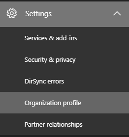
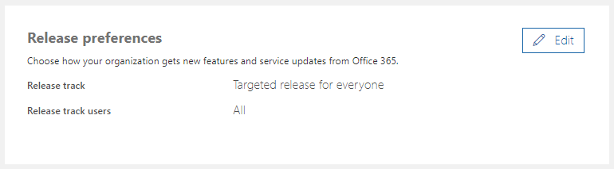
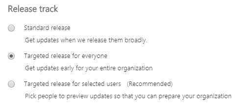

On my personal machine, I use Office 365 licensed by my university. Upon recently performing a fresh install of the OS, I noticed that their ICT department has set the default update channel to Semi-annual. Here’s how to switch to the more frequent Monthly channel on your local machine.
Referring to Microsoft’s article here, I created the following batch script and ran as Administrator.
setlocal reg query HKEY_LOCAL_MACHINE\SOFTWARE\Microsoft\Office\ClickToRun\Configuration\ /v CDNBaseUrl if %errorlevel%==0 (goto SwitchChannel) else (goto End) :SwitchChannel reg add HKEY_LOCAL_MACHINE\SOFTWARE\Microsoft\Office\ClickToRun\Configuration /v CDNBaseUrl /t REG_SZ /d "http://officecdn.microsoft.com/pr/492350f6-3a01-4f97-b9c0-c7c6ddf67d60" /f reg delete HKEY_LOCAL_MACHINE\SOFTWARE\Microsoft\Office\ClickToRun\Configuration /v UpdateUrl /f reg delete HKEY_LOCAL_MACHINE\SOFTWARE\Microsoft\Office\ClickToRun\Configuration /v UpdateToVersion /f reg delete HKEY_LOCAL_MACHINE\SOFTWARE\Microsoft\Office\ClickToRun\Updates /v UpdateToVersion /f reg delete HKEY_LOCAL_MACHINE\SOFTWARE\Policies\Microsoft\Office\16.0\Common\OfficeUpdate\ /f :End Endlocal
I then forced an update from Word/Excel/etc: File > Account, then Update Options > Update Now under the Product Information section.
Note: stay up to date with Microsoft products at your own risk.
For IT admins
If using Office Deployment Tool, set the channel in the configuration.xml (MS docs) – note: at time of writing, the “default” configuration script (suggested by Microsoft here) still installs the 2016 versions of Office applications; if you want the “Office 365/2019 feature set” versions use the Monthly channel
To change the default download channel from the user portal:


Choose a release track according to your bravery…
